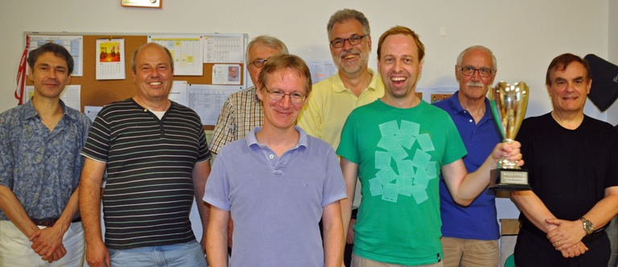
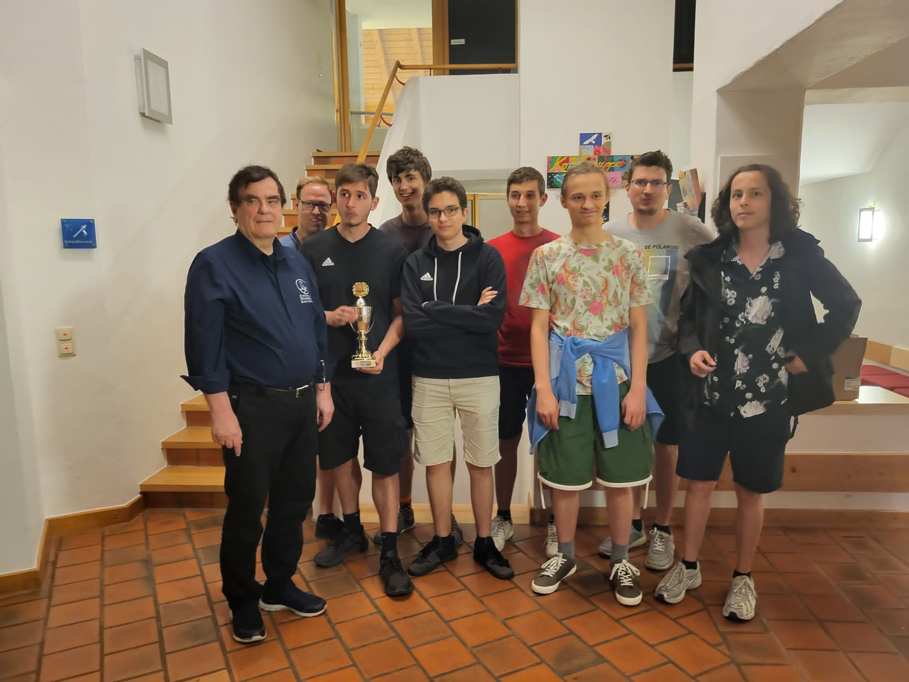
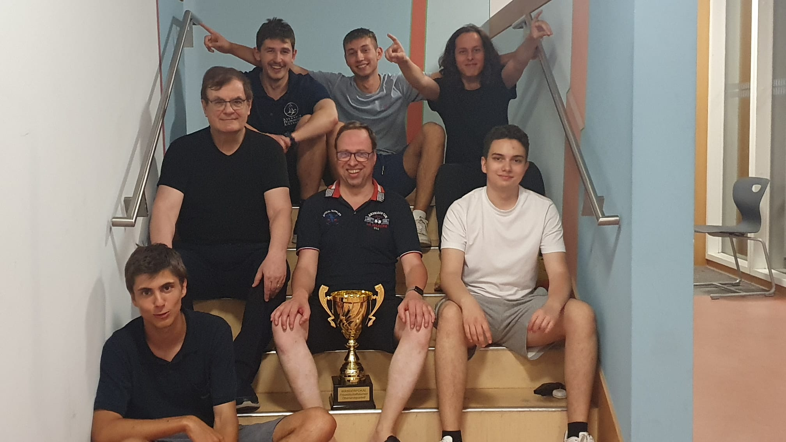
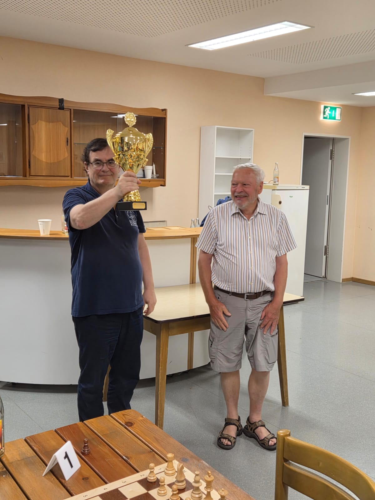
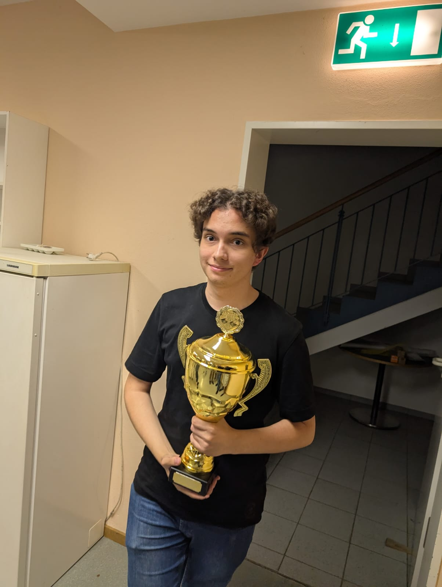
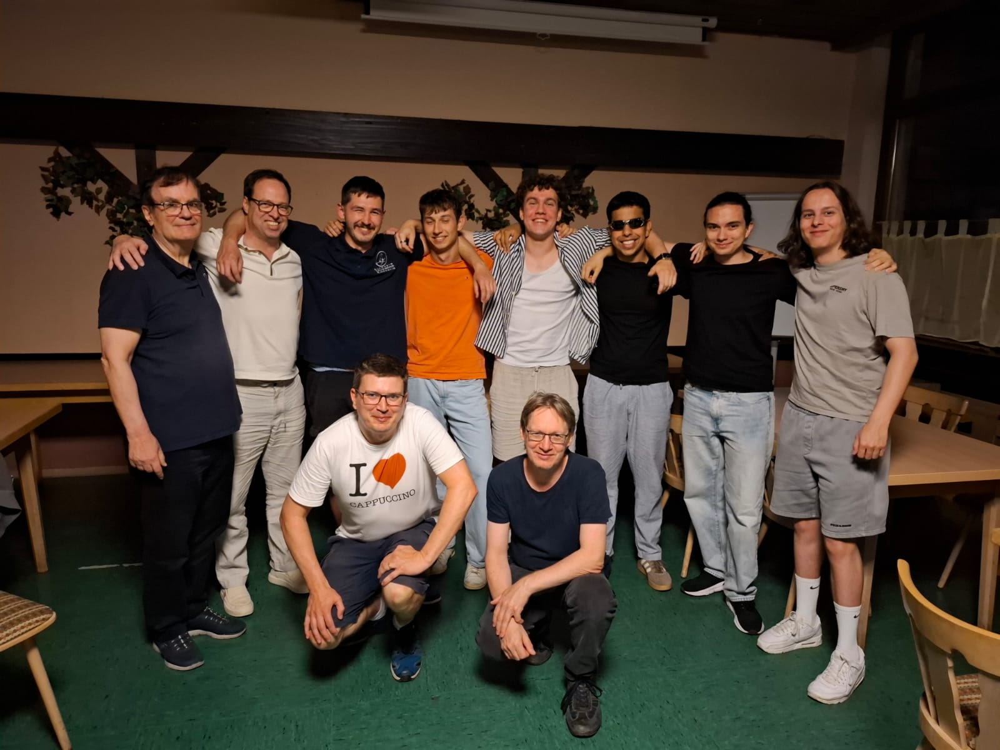

Oberlandquartett
- Aschheim12 tournament wins · 3 trophiesTowards the next trophy: 2× in a row, 2/5 wins
- Deisenhofen10 tournament wins · 2 trophiesTowards the next trophy: no win yet
- Holzkirchen2 tournament wins · 0 trophiesTowards the next trophy: no win yet
- Höhenkirchen3 tournament wins · 0 trophiesTowards the next trophy: no win yet






1 / 6
| Year | Host | Aschheim | Deisenhofen | Holzkirchen | Höhenkirchen |
|---|---|---|---|---|---|
| 2030 | Holzkirchen | Host: Holzkirchen | |||
| 2029 | Höhenkirchen | Host: Höhenkirchen | |||
| 2028 | Aschheim | Host: Aschheim | |||
| 2027 | Deisenhofen | Host: Deisenhofen | |||
| 202603.07. | Holzkirchen | 1 | 2 | 4 | 3 |
| 202527.06. | Höhenkirchen | 1 | 2 | 4 | 3 |
| 202428.06. | Aschheim | 🏆 1 | 2 | Aschheim II | 3 |
| 202323.06. | Deisenhofen | 1 | 2 | 4 | 3 |
| 202201.07. | Holzkirchen | 1 | 4 | 2 | 3 |
| 2021 | Cancelled (Covid) | ||||
| 2020 | Cancelled (Covid) | ||||
| 201928.06. | Höhenkirchen | 3 | 🏆 1 | 2 | 4 |
| 201829.06. | Aschheim | 2 | 1 | 3 | 4 |
| 201730.06. | Deisenhofen | 4 | 3 | 1 | 2 |
| 201608.07. | Holzkirchen | 4 | 1 | 2 | 3 |
| 201517.07. | Höhenkirchen | 1 | 2 | 4 | 3 |
| 201413.06. | Aschheim | 3 | 2 | 4 | 1 |
| 201328.06. | Deisenhofen | 4 | 1 | 2 | 3 |
| 201229.06. | Holzkirchen | 3 | 1 | 2 | 4 |
| 201124.06. | Höhenkirchen | 3 | 🏆 1 | 4 | 2 |
| 201011.06. | Aschheim | 2 | 1 | 4 | 3 |
| 200926.06. | Deisenhofen | 3 | 1 | 4 | 2 |
| 200804.07. | Holzkirchen | 🏆 1 | 2 | 3 | 4 |
| 200729.06. | Höhenkirchen | 1 | 2 | 4 | 3 |
| 200607.07. | Aschheim | 1 | 2 | 3 | 4 |
| 200515.07. | Deisenhofen | 3 | 1 | 4 | 2 |
| 200418.06. | Holzkirchen | 2 | 3 | 4 | 1 |
| 200324.07. | Höhenkirchen | 4 | 3 | 2 | 1 |
| 2002 | Aschheim | not held | |||
| 200129.06. | Deisenhofen | 3 | 2 | 1 | 4 |
| 200030.06. | Holzkirchen | 3 | 1 | 4 | 2 |
| 1999 | Höhenkirchen | 🏆 1 | 2 | 4 | 3 |
| 199817.07. | Aschheim | 1 | 3 | 4 | 2 |
| 199721.07. | Deisenhofen | 1 | 3 | 4 | 2 |
1 Tournament win 🏆 1 Trophy win
The trophy goes to the team that wins either 3x in a row or 5x in total.
After a trophy win, counting starts again! The winner donates the new trophy.